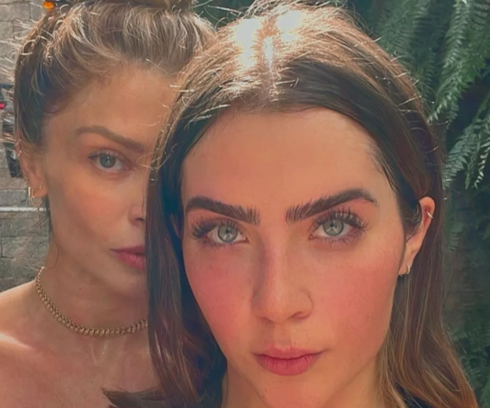
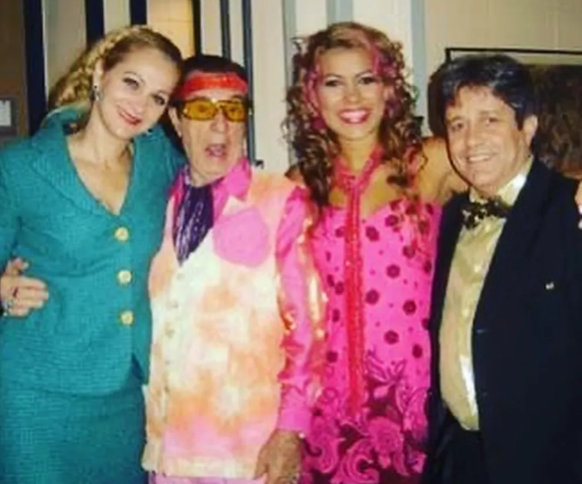

Ex-BBBs na atuação: Jade Picon e Rafa Kalimann seguem caminho já trilhado por Grazi Massafera e mais sisters
Relembre outras participantes do reality show que estrearam como atrizes após o programa.
Por g1
Advogada Kássia Regina Brianez Trulha de Assis foi presa em Três Lagoas — Foto: Redes sociais/ Reprodução
Jade Picon começou, na última semana, a gravar suas cenas como a personagem Chiara para a novela "Travessia". A influencer recebeu o convite para a novela logo após sair do "BBB22". E, com isso, faz crescer a lista de ex-participantes do reality show que seguiram para a área da atuação depois de deixarem o jogo.

Pouco antes de Jade, Rafa Kalimann fez sua estreia como atriz na série "Rensga Hits". Mas a lista de ex-BBBs que se tornaram atrizes ainda conta com Grazi Massafera, Juliana Alves, Vanessa Pascale, Gyselle Soares e Tati Pink.
Um dado interessante é que a maioria delas foi vice-campeã de suas respectivas edições.
Continua depois da publicidade

Jade Picon
Jade Picon começa a gravar cenas de "Travessia" — Foto: Reprodução/Instagram
Jade Picon fará sua estreia como atriz na novela "Travessia", prevista para estrear em outubro.
O anúncio da influencer na trama gerou até um burburinho se ela poderia ou não atuar, por não ter formação. Mas com a autorização em mãos, a influencer está prontíssima pra estreia.
As filmagens de "Travessia" já começaram há algumas semanas, e parte do elenco passou por Portugal e pelo Maranhão. Mas Jade começou a gravar somente na última semana as primeiras cenas da sua personagem, que vai se chamar Chiara.
Continua depois da publicidade

Ao site da novela, Jade contou, antes das primeiras gravações, que estava bem ansiosa para o primeiro dia de filmagem, mas que tentava não ficar pensando no nervosismo, e sim focar na preparação pra encarar esse desafio.
Vanessa Pascale
Vanessa Pascale em "Totalmente Demais" — Foto: Globo/Paulo Belote
Continua depois da publicidade

Participante do "BBB1", Vanessa Pascale foi a primeira ex-BBB a despontar em projetos como atriz.
Na verdade, ela já era formada em artes cênicas quando entrou no programa, mas foi depois da primeira edição do reality que a carreira decolou.
Vanessa foi vice-campeã do programa, que foi ao ar em 2002. Naquele mesmo ano, ela estreou na novela "Sabor da paixão".
"Totalmente demais", "Salve-se quem puder" e "Um lugar ao sol" foram outras novelas que contaram com a presença da atriz.
Este ano, ela ainda fez uma participação em "Cara e coragem", que ainda tá no ar.
Juliana Alves
Vanessa Pascale em "Totalmente Demais" — Foto: Globo/Paulo Belote
Jade Picon fará sua estreia como atriz na novela "Travessia", prevista para estrear em outubro.
Antes do reality, Juliana fez oficina de teatro, cursou dança e foi uma das bailarinas do "Domingão do Faustão".
Logo após o programa, Juliana foi convidada pra participar da novela "Chocolate com pimenta". Depois a atriz ainda passou por "Duas caras", "Caminho das Índias", "Ti-ti-ti", "Cheias de charme" e outras tantas novelas, além de fazer alguns trabalhos para o cinema.
O anúncio da influencer na trama gerou até um burburinho se ela poderia ou não atuar, por não ter formação. Mas com a autorização em mãos, a influencer está prontíssima pra estreia.
As filmagens de "Travessia" já começaram há algumas semanas, e parte do elenco passou por Portugal e pelo Maranhão. Mas Jade começou a gravar somente na última semana as primeiras cenas da sua personagem, que vai se chamar Chiara.
Continua depois da publicidade

Grazi Massafera
Grazi Massafera em "Verdades Secretas" — Foto: Globo/Estevam Avellar
Vice-campeã do "BBB5", Grazi Massafera enfrentou bastante preconceito da carreira como atriz, e nunca escondeu isso.
Logo após o reality, Grazi entrou para a Oficina de Atores da Globo e, em seguida, estreou como a personagem Thelma, de "Páginas da vida".
Apesar do preconceito enfrentado, Grazi venceu na categoria de Atriz Revelação em diversas premiações daquele ano. Mas foi em 2015 que ela foi totalmente reconhecida por seu trabalho como atriz.
Naquele ano, Grazi interpretou Larissa, de "Verdades Secretas", mostrando de forma primorosa a trajetória de uma modelo que ia do glamour das passarelas ao vício em drogas.
Tati Pink
Tati Pink em gravação para o "Zorra Total" — Foto: Reprodução/Instagram
Grazi não foi a única sister do "BBB5" a seguir a carreira de atriz. Daquela edição também surgiu Tatiane Franklin do Nascimento Barbosa, mais conhecida como Tati Pink.
Tati foi a décima eliminada do programa, saindo no penúltimo paredão. Antes do jogo, ela trabalhava como cabeleireira. Mas depois do reality, engatou carreira como atriz.
Tati ficou cerca de três anos atuando no humorístico "Zorra total". Nas redes, ela costuma compartilhar alguns registros da época como lembrança. Hoje, ela tem um canal de culinária no YouTube.
Gyselle Soares
Gyselle Soares no musical "Batalha do Jenipapo: as vozes dos esquecidos"
A modelo Gyselle Soares foi a vice-campeã do "BBB8". Naquele ano, quem saiu vencedor foi o músico Rafinha.
Logo depois do programa, Gyselle estreou como atriz no humorístico "A turma do Didi". Depois, participou de alguns filmes, como "Os sonhos de um sonhador: a história de Frank Aguiar" e "Depressão entre amigos".
Gyselle também fez algumas peças de teatro, e interpretou Maria na "Paixão de cristo", em Teresina, no ano de 2019.
A ex-sister ainda levou sua carreira artística pra França, país onde morou por cerca de dez anos. Por lá, estrelou também algumas peças e filmes.
Rafa Kalimann
Paloma (Rafa Kalimann) e Raíssa Medeiros (Alice Wegmann): personagens de "Rensga Hits"
Rafa Kalimann foi vice-campeã do "BBB20" e, desde que saiu do programa, nunca escondeu seu desejo pela atuação.
Tanto que um mês depois da grande final do programa, quando assinou contrato com a Globo, Rafa disse que esperava por essa oportunidade desde os 14 anos de idade.
Ela ainda completou a comemoração dizendo que a "dedicação pra carreira de atriz agora exigiria o dobro do esforço e foco".
A estreia como atriz aconteceu somente agora, dois anos depois. Rafa está no elenco da série "Rensga hits", que fala sobre o universo da música sertaneja.
Sua personagem, Paloma, é uma influencer que adora saber dos babados mais quentes entre os sertanejos de Goiânia.
Veja também
'Fazendo o Brasil passar vergonha', diz Octavio Guedes sobre Bolsonaro em Londres
Mais do G1
Eleições 2022
SUS: o que dizem os planos de governo dos candidatos à Presidência
Propostas sugerem aumentar investimentos, bem como promover campanhas de vacinação e estruturar carreiras médicas.

Ipec: colunistas analisam resultado da pesquisa presidencial desta segunda; veja vídeos
Ex-presidente Lula segue com 44% das intenções de voto no primeiro turno da eleição presidencial. Jair Bolsonaro tem 31%. Levantamento foi realizado entre 2 e 4 de setembro e tem margem de erro de 2 pontos percentuais para mais ou menos.

Pacheco e Barroso se reúnem nesta terça para discutir o piso salarial da enfermagem
Decisão do ministro do STF suspendeu o piso temporariamente. Valor de R$ 4.750 foi aprovado pela Câmara e pelo Senado.

Pai, filha e amiga morrem após carro bater em árvore em Curitiba
Segundo familiares, os três voltavam da festa de aniversário de uma das vítimas. Dedetran irá investigar as circunstâncias do acidente.

UEG abre inscrições de concurso com salários de até R$ 5,3 mil para área administrativa
Cargos são de assistente de gestão administrativa e analista de gestão governamental. Inscrições seguem até 6 de outubro.
Continua depois da publicidade


Médico goiano comemora recorde ao pescar pirarara de 1,4 metro: 'Briga de 40 minutos'
Ele contou que não tem muita experiência com pescaria e usa material emprestado. Amigos que o acompanhavam disseram que nunca tinham visto peixe desse tamanho.

Adolescente é flagrado transportando 5,5 toneladas de maconha em caminhão roubado, diz PRF
Segundo polícia, menor tentou fugir por 5 km, mas foi abordado pela corporação em Paranaiguara. Droga estava escondida em meio a galhos de mandioca; veja vídeo.


Casal e criança morrem após carreta cair em ribanceira, em Goiatuba
Imagens mostram a altura de onde caminhão despencou após perder o controle. Segundo o Corpo de Bombeiros, todos morreram ainda no local.

A misteriosa queda de um avião no mar Báltico
Pilotos da Otan que seguiram aeronave não conseguiram avistar ninguém na cabine de comando da aeronave Cessna 551.

Ipec: Lula lidera corrida presidencial em 15 estados; Bolsonaro, em 5 mais DF
Instituto concluiu divulgação de pesquisas em todos os estados, mais o DF, no último sábado. Ex-presidente está à frente em todo o Nordeste; Bolsonaro vai melhor no Centro-Oeste.
Continua depois da publicidade

Fachin cita violência política e limita decretos de Bolsonaro sobre compra de armas e munições
Liminares foram concedidas pelo ministro do STF em três ações que tiveram o julgamento suspenso no ano passado, após pedido de vista de outro ministro da corte, Nunes Marques.

Mulher invade cemitério e tenta desenterrar cadáver de ex-namorado, em MS
O casal já não estava mais junto quando ele morreu.

Jovem diz que foi esfaqueado e perdeu celular durante briga em show do Gusttavo Lima em Goiânia
Matheus Fernandes contou que foi atingido ao tentar separar confusão após amiga ser agredida por homem. Ele recebeu mais de 20 pontos nas costas.

Diretora é exonerada da função após crianças marcharem e empunharem réplicas de armas em escola de Padre Bernardo
Vídeo mostra alunos seguindo ordens de instrutor. Secretaria Estadual de Educação disse que a diretora será remanejada para outro cargo.

Em caso raro, jovem goiana tem gêmeos de pais diferentes: 'Não sabia que podia acontecer'
Caso aconteceu em Mineiros, onde a mãe mora com os filhos. Médico disse que há 20 casos semelhantes registrados no mundo.